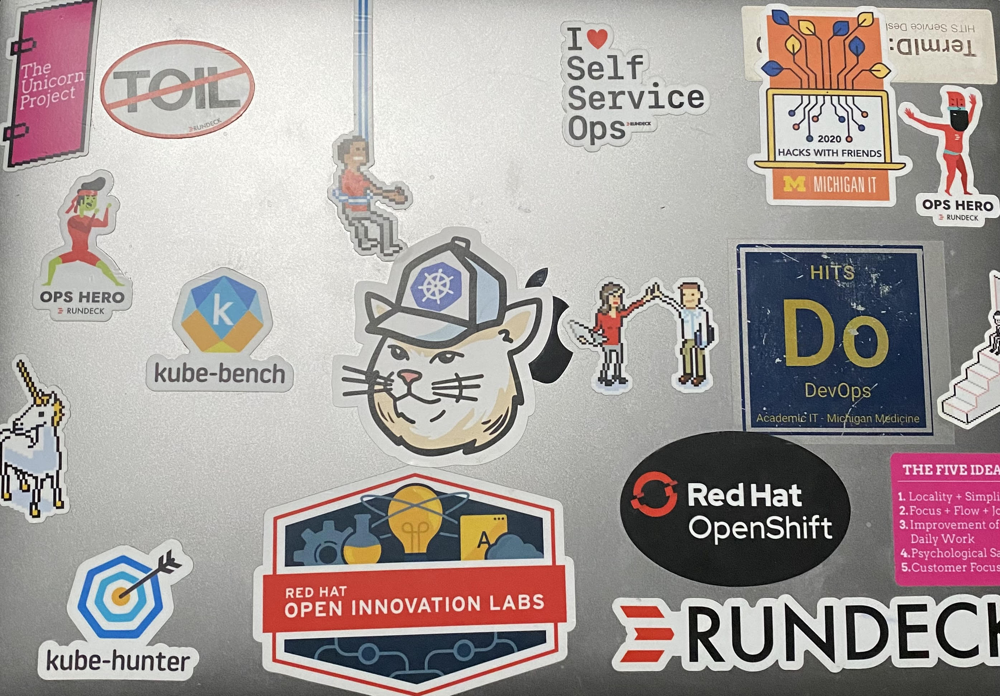

About
More About Me.
Getting things to work, understanding how they work, and understanding why they work is what drove me to pursue a career in technology.
Hobbies
Outside of work I enjoy spending time outdoors biking, hiking, or camping. Sitting next to a warm bonfire on a cool night with friends or family brings me happiness. I love following the latest technology trends and I am usually reading a book furthering my understanding and passion for technology.
How I do Work.
My core characteristics are: problem solving, systems thinking, and continuous learning.
I get enjoyment from taking on challenging problems and being able to solve them through elegant solutions.
Problem Solving
I take a scientific approach to problem solving. Rather than changing things until it works, I use the Toyota Kata. Following a methodical practice of problem solving allows me to form a hypothesis and perform experiments to achieve my desired outcome.
Systems Thinking
What is a system? Philosophically speaking, everything is a system. I am a system, and I am a professional at managing complex systems. My systems thinking approach allows me to architect and holistically understand applications and consider all of the inputs, outputs, and relationships with other systems.
Continuous Learning
I describe myself as a life long learner. I am always making time to learn something new whether it is formal education, community meetups, or just learning a new skill on my own. I have a curiosity within me that always wants to dive deeper into a subject.
Open Source Software
Open Source Software powers the world as we know it today. One of my personal goals is to be able to continuously contribute to the open source community.
My First Contribution: Velero
Velero is an open source tool used to backup the state of kubernetes clusters including content of persistent volumes (if enabled). I've used the tool to manage the state for all of my GKE clusters. One advantage that Google Cloud provides is using Workload Identity which allows mapping a kubernetes service account (KSA) to a Google Service Account (GSA). This is a huge operational and security win because it allows using a service account without having to manage any tokens or keys.
I found a minor error in the documentation of using velero's gcp workload identity plugin and submitted my first open source PR fixing the documentation, found here.
While the contribution is minor text fix and not technical in nature, it was my first step is contributing to the open source community. My next step is to provide more technical contributions by submitting my own PRs, or reviewing other issues/PRs and providing comments and feedback.
My Stickers
Developer Setup
The stickers on my laptop are a statement of my ideals. I believe using technologies such as kubernetes, eliminating toil, and enabling self service creates safer, more reliable systems. Below is a photo I've snapped of the back of my Macbook that shows my stickers.
Services
What I Do.
I design, support, and administer application infrastructure. Additionally, I build and deliver self-service solutions providing locality and empowering my customers.
-
Architecture
- I'm an experienced and proven architect designing infrastructure to host complex software. From sizing and configuring on premise database and application servers, on premise kubernetes clusters, or cloud resources I appropriately engineer solutions to meet requirements.
- Cloud providers offer many services that requires specific knowledge of when and how to use each service. Services typically range from completely provider managed with minimal configuration options available to entirely user managed with more configuration required.
- Identifying system requirements and matching those to the best service for the job means discussing the trade-offs.
-
Kubernetes
- Since 2018 I have been working with kubernetes. In 2019 I received my Certified Kubernetes Administrator (CKA) certification. I passed the exam my first attempt which at the time had a 92% failure rate.
- I've manually created clusters the hard way by downloading the binaries, creating a CA, and signing and distributing certificates. This, in addition to being familiar with the source code, and compiling kubernetes myself is how I continue to learn about the software.
- I have leveraged open source tools such as kubeadm and kubespray, an ansible wrapper of kubeadm, to boot strap and support production k8s clusters in on premise data centers.
- Moving into the cloud I support production GKE clusters and am experienced with other providers services such as AKS and EKS. I understand the intricacies of underlying k8s infrastructure and consider implementation details such as CNI (kubenet, selenium, calico, etc) providers, CSI (GCE,GCS,NFS,HostPath, etc) drivers, and details such as pod limits per node (110 on GKE clusters).
-
CICD Pipelines
- Shifting left and increasing feedback loops produces better quality products faster.
- Utilizing CICD pipelines enables the business to move faster, safer.
- I am experienced in building multi-stage pipelines for applications in multiple languages including java, angular, react, and python.
- Automating deployments and adding in deployment gates or checkpoints improves the quality of software.
-
Site Reliability Engineering
- I am all too comfortable with carrying around a pager in the year 2021.
- As a seasoned SRE, I have experience restoring services and debugging systems at any time of day or night.
-
Development
- Infrastructure as Code becomes easily obtainable with configuration management tools like Ansible, Puppet, or Chef.
- When considering cloud native infrastructure, developing cloud native software is the ideal solution for managing cloud native infrastructure.
- While my favorite software to develop is infrastructure as code, I enjoy all forms of development.